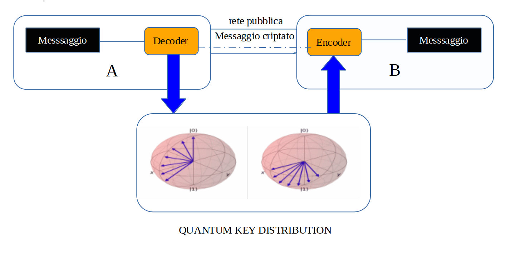
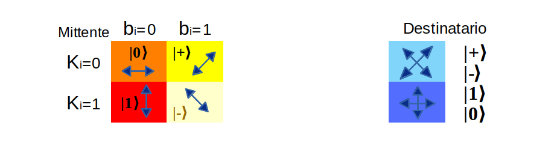
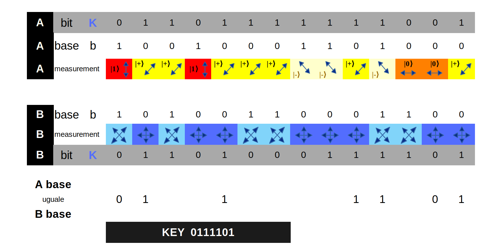
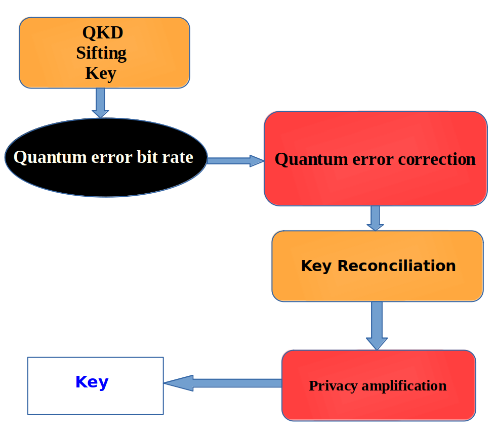

Quantum Key Distribution
Quantum Key Distribution è un algoritmo per trasferire un codice segreto tra 2 utenti
su di un canale dove anche altri utenti possono accedere.
Con l'algoritmo si generara un codice segreto causale tra le 2 parti ma solo il codice e non il messaggio completo.
Poi con il codice le parti possono criptare/decriptare il messaggio.
Altra cafratteristica di questo algoritmo è che gli utenti possono accertare se un terzo ha intercettato la
il codice generato a causa delle caratteristiche quantistiche.
Infatti una volta che il ricevente effettua la misurazione del circuito questo viene modificato e se il legittimo
ricevente prova a ricevere il codice riceverà un codice diverso da quello generato dal mittente e quindi
il destinatario sa che qualcun'altro a ricevuto il codice generato dal mittente.
Vediamo un esempio di questom algoritmo indicando con A(Alice)il mittente, B(Bob) il destinatario e C(Eve) o eavesdropping il terzo intruso.
Con questa formula possiamo anche calcolare la probabilità che il codice segreto non sia stato intercettato perchè esiste anche la possibilità che C
nel caso che A, B e C contemporaneamente scelgano la stessa chiave casuale e in questo caso l'intrusione di C non
causerebbe errori e A e/o B non si accorgerebbero di nulla.
P = 0.75x
dove x è il numero dei bit usati per generare il codice e P è la probabilità che A e B non
rilevino l'intrusione di C.
con x = 10 si ha P = 5.63135147095%
con x = 50 si ha P = 0.00005663216%
quindi è facile notare che aumentando il numero di bits la percentuale di una intrusione diviene pressochè minima.
Per ogni bits A e B devono scegliere un basis tra |0⟩, |1⟩, |+⟩ o |−⟩ che si hanno dalla misurazione
dell'asse Z o X. Nell'esempio che seguirà chiamiamo :
Abit i bit casuali scelti da A
Bbit i bit casuali scelti da B
Abase il basis X o Z casuale scelto da A
Bbase il basis X o Z casuale scelto da B
e per l'intrusione
Cbit i bit casuali scelti da C
Cbase il basis X o Z casuale scelto da C
Per le fasi si utilizza la seguente codifica:
A, B, C indica l'utente e 1-2-3 indica la sequenza delle operazioni per l'utente indicato.
Per eseguire questo esempio si seguirà il protocollo BB84 il cui nome deriva da
C.H. Bennett e G. Brassard che lo presentarono nel 1984.
Questo protocollo di distribuzione quantistica delle chiavi sfrutta le proprietà di un circuito
quantistico inviando dei random bit nelle porte Z, |0⟩ e |1⟩, e X, |+⟩ e |−⟩.
Sotto viene riprodotto lo schema della trasmissione simmetrica della chiave tramite il circuito quantistico
e successivamento del messaggio criptato sulla rete tradizionale che il destinatario
decripta con la chiave ricevuta se questa non è stata intercettata da nessuno.

Analizziamo ora la fase Quantum Key Distribution dove A usa la polarizzazione dei fotoni
orizzontale(0) o verticale(1) oppure -45°(0) o +45°(1) mentre B per ricevere i fotoni dopo che questi sono
stati polarizzati e distinguibili tra orizzontali e verticali oppure tra -45° e +45°.
Vediamo nello schema sottostante come avviene la codifica di A e la decodifica di B.
A dopo aver generato in modo casuale i bit della key e base per le basi selezionate per ogni n bit sceglie la base X o Z
per codificare la key accoppiando la relativa b e k come nello schema sottostante.
Allo stesso modo B per decodificare la key ricevuta deve scegliere la base X o Z e come si evince dal grafici seguenti
sceglia la base X o Z scegliendo polarizzazione orizzontale e verticale se base uguale a 0
oppure -45° o +45° se base = 1.


B nella fase finale dopo aver scelto le basi da utilizzare effettua la misurazione di tutti i qubits inviati da
A.
Effettuata la misurazione sia A che B selezionano un numero stabilito di bit e verificano che la selezione di tutti
gli n qubits che le 2 liste siano uguali.
Se sono uguali ciò indica che il circuito è integro e nessuno ha provato ad intercettare il codice altrimenti il codice non
è integro e la chiave ricevuta non è valida per cui A procederà a generare una nuova chiave.
Mentre se il codice è integro B estrae la chiave che si ottiene prendendo solo i bit in cui si ha
l'uguaglianza delle basi di A e di B.
Nell'esempio la chiave ottenuta è 0111101 che B deve usare per decodificare il messaggio
codificato ricevuto da A nel canale pubblico dopo aver verificato che il codice sul canale quantistico non
sia stato alterato.
A causa degli errori del circuito è possibile non avere lo stesso risultato tra A e B e quindi
non è possibile stabilire se si tratta di errori o di intrusione di terze parti per questo è importante la fase post-trasmissione
dove si verifica se il tasso di errore, il quantum bit error rate (QBER), è maggiore di una soglia prestabilita che generalmente è
dell' 11% perchè se è minore la discrepanza è dovuta solo ad errori del circuito quantistico mentre se supera la soglia prestabilita la trasmissione
ha subito una intromissione per cui non viene ritenuta valida.
Nell'immagine sottostante vengono riprodotte le fasi che seguono la trasmissione della chiave.

Quantum Bit Error Rate
The Quantum Bit Error Rate (QBER) misura il tasso di errore e contiene informazioni sull'esistenza
di una intrusione nel circuito e permette di quantificare le informazioni conosciute dall'intruso.
QBER = pw+ `(pdnqΣfrtl)/2 µ`
dove pw = probabilità per un errato 'click' (1-2%)
pd = probabilità per un errato photon signal (Si: 10 − 7; GaAs 10 − 5)
n = numero di rilevamenti
q = phase = 1/2 (optical fibres); polarizaton = 1 ( migliore in aria )
Σ = rilevamento di efficienza
fr = pulse repeat frequency
tl = transmission rate (maggiore a corto raggio)
µ = attenuation for light pulses (single photons = 1) - pulse = azione per modificare qubit
Come detto il QBER è intorno al 11% ed indica anche che se si è in presenza di una intrusione di C
questo non è riuscito a prelevare informazioni tali da compromettere la sicurezza della chiave
trasmessa da A a B.
Come possiamo intuire il QBER dipende anche dal tipo di infrastruttura che viene usata e maggiore è la distanza tra A e B e maggiore è il
QBER.
Per determinare il QBER si utilizza una parte della key ricevuta la cui dimensione si calcola in base al livello
di sicurezza che si vuole ottenere in base alla seguente formula:
`S(k) = (-sum_(k=1)^(n) k/n log(k/n))/n`
dove S(k) = livello di sicurezza della key
n = numero di bits che compongono la key
k = numero di bits utilizzati per determinare QBER
I bits k che si useranno per determinare il QBER verranno poi tolti dalla key Q(prima di questa operazione) la cui lunghezza quindi sarà minore e la indichiamo
con R.
Dopo aver determinato il ratio si passa se questo è inferiore a 11% alla Quantum Error Correction in cui si
mitiga il QBER e si effettua la Key Reconciliation.
Key Reconciliation
La Key Reconciliation è la fase nella quale A e B verificano se nella key ottenuta dopo la fase precedente indicata con R non contenga errori e quindi non sia uguale per A e B.
Questa si effettua dividendo in blocchi la key la cui dimensione dipende dal QBER, più alto il QBER e maggiore
deve essere il numero dei blocchi e la dimensione dei blocchi migliore è data dalla seguente formula:
0.73/qb dove qb è il QBER.
Per ogni blocco A e B si scambiano dati per mitigare gli errori e verificare correttezza degli stessi.
Il processo è ripetitivo per ogni blocco e quando vengono intercettati bit in errore questi vengono scartati per cui
al termine del processo avremo una key con un numero di bit inferiore.
Con L indichiamo i bits che verranno eliminati in questa fase e dipende dalla lunghezza di Q e dal QBER.
La lunghezza della chiave che avremo al termine di questa fase che indichiamo con S è uguale a R - L.
Privacy amplification
La Privacy amplification è importante perchè è il momento in cui si verifica se la trasmissione della
chiave da A a B non sia stata intercettata da C e mettere in pericolo una eventuale trasmissione del messaggio codificato
nel canale pubblico ad esempio internet.
Dopo aver eliminato i bits in error ora A e B hanno la stessa chiave ma per ulteriore sicurezza visto che C potrebbe aver intercettato
lo scambio intervenuto nelle fasi precedenti si eliminano altri bits e per calcolare quanti bits possono essere eliminati in questa fase utilizziamo la
seguente formula:
`(n 2^(-b))/log 2 < 1`
dove n = numero di bits della chiave = S
b = numero bits che si vuole eliminare
Ora il numero di bits rimanenti nella chiave sono LK = S - b
Facendo un resoconto vediamo che siamo partiti da Q(Sifted key) per arrivare a LK tale che
Q > R > S > LK
Questo determina una nuova valutazione se la key sia ancora valida essendo la lunghezza inferiore di quella di partenza
e una key troppo corta non è sicura.
Vediamo dopo aver determinato la lunghezza della chiave finale LK quanto deve essere
lungo il messaggio iniziale che qui chiamiamo QQ che A deve inviare a B nel canale quantistico e da cui B
estrae Q(Sifted key).
In genere Q è il 50% di QQ da qui usiamo la seguente formula per determinare QQ
QQ ` = 2 [LK + log[Q/log 2]/log 2 + eQ+L] `
dove e = % di Q usata per calcolare QBER definita in base al livello di sicurezza S(k)
L = bits eliminati nella fase di Key Reconciliation
In questa fase si possono anche inserire ulteri protocolli di sicurezza come ad esempio
un metodo con un codice di controllo da aggiungere alla chiave che si calcola applicando tutti i
valori ricevuti nella chiave e che C o altro intruso non potrebbe conoscere interamente salvo abbia
intercettato tutta la trasmissione ma a quel punto A e B saprebbero che la chiave non è valida per i motivi precedentemente esposti.
Per essere sicuri la soglia del 11% di QBER deve essere attribuita per intero ad una intrusione da parte di C
e non considerare in essa anche gli errori dovuti al circuito quantistico.
Per questo motivo la soglia di sicurezza viene elevata al 14,65% lasciando un 11% ad una eventiuale
intrusione che non mette comunque in discussione la sicurezza della chiave perchè C
può aver intercettato solo una minima parte se la trasmissione come da protocollo BB84
viene effettuato qubit dopo qubit cioè un qubit alla volta.
A e B devono scambiarsi i bit iniziali in modo sicuro anche con altri metodi di sicurezza come ad esempio presenza fisica,
al telefono con persona conosciuta , codice RSA, autenticazione biometrica ecc. poi le comunicazioni successive
possono proseguire sui canali già descritti.
QKD viene utilizzato come metodo aggiuntivo di sicurezza ad esempio unendo la chiave generato con QKD ad altra chiave generata
con altro metodo ad esempio RSA.
QKD esempio in PYTHON
from qiskit import QuantumCircuit, execute, Aer
from qiskit.visualization import plot_histogram, plot_bloch_multivector
import numpy as np
from numpy.random import randint
def codifica(bit, base):
messaggio = []
for i in range(n):
circuit = QuantumCircuit(1,1)
if base[i] == 0: # Prepare qubit in Z-basis
if bit[i] == 0:
pass
else:
circuit.x(0)
else: # Prepare qubit in X-basis
if bit[i] == 0:
circuit.h(0)
else:
circuit.x(0)
circuit.h(0)
circuit.barrier()
messaggio.append(circuit)
return messaggio
def codice(messaggio, base):
#in base alla base ed ai messaggi ottengo il codice
backend = Aer.get_backend('qasm_simulator')
risultato = []
for i in range(n):
if base[i] == 0: # measuring in Z-basis
messaggio[i].measure(0,0)
if base[i] == 1: # measuring in X-basis
messaggio[i].h(0)
messaggio[i].measure(0,0)
result = execute(messaggio[i], backend, shots=1024, memory=True).result()
ris = int(result.get_memory()[0])
risultato.append(ris)
return risultato
def filtro(abase, bbase, bit):
#selezione bit dove A e B hanno stessa base
lista = []
for i in range(n):
if abase[i] == bbase[i]:
lista.append(bit[i])
return lista
def check(bit, lista):
lis = []
for i in lista:
j = np.mod(i, len(bit))
lis.append(bit.pop(j))
return lis
np.random.seed(seed=0)
n = 100
## FASE A 1
# A genera bits casuali in formato binario tra 0 e n
Abit = randint(2, size=n)
## FASE A 2
# A crea array con dati codificati in bit su diverse bases
Abase = randint(2, size=n)
messaggio = codifica(Abit, Abase)
## FASE B 1
# B decide quali base andrà a misurare:
Bbase = randint(2, size=n)
Bcod = codice(messaggio, Bbase)
## FASE A 3 e B 2
#selezione bit dove A e B hanno stessa base
Asecret = filtro(Abase, Bbase, Abit)
Bsecret = filtro(Abase, Bbase, Bcod)
## FASE A 4 e B 3
# controllo selezione A e B se stessi dati
n_check = 20
selezione = randint(n, size=n_check)
Bcheck = check(Bsecret, selezione)
Acheck = check(Asecret, selezione)
RISULTATO di A check 20 bits = [0, 1, 0, 1, 1, 0, 0, 0, 0, 0, 0, 1, 0, 0, 0, 1, 1, 1, 0, 1, 1, 1, 0, 0, 0]
RISULTATO di B check 20 bits = [0, 1, 0, 1, 1, 0, 0, 0, 0, 0, 0, 1, 0, 0, 0, 1, 1, 1, 0, 1, 1, 1, 0, 0, 0]
Come è facile notare i dati di verifica di A e B sono gli stessi per cui in caso di n con cifre importanti
possiamo affermare che nessuno ha intercettato il messaggio che A ha inviato a B.
Ora passiamo invece ad analizzare il caso in cui un terzo, C, si inserisce nel percorso e nella
misurazione dello stato dei qubit li modifica per cui in fase di check finale i valori di A e B sono
diversi così A e B sanno che il codice è stato intercettato da un altro utente.
from qiskit import QuantumCircuit, execute, Aer
from qiskit.visualization import plot_histogram, plot_bloch_multivector
import numpy as np
from numpy.random import randint
def codifica(bit, base):
messaggio = []
for i in range(n):
circuit = QuantumCircuit(1,1)
if base[i] == 0: # Prepare qubit in Z-basis
if bit[i] == 0:
pass
else:
circuit.x(0)
else: # Prepare qubit in X-basis
if bit[i] == 0:
circuit.h(0)
else:
circuit.x(0)
circuit.h(0)
circuit.barrier()
messaggio.append(circuit)
return messaggio
def codice(messaggio, base):
#in base alla base ed ai messaggi ottengo il codice
backend = Aer.get_backend('qasm_simulator')
risultato = []
for i in range(n):
if base[i] == 0: # measuring in Z-basis
messaggio[i].measure(0,0)
if base[i] == 1: # measuring in X-basis
messaggio[i].h(0)
messaggio[i].measure(0,0)
result = execute(messaggio[i], backend, shots=1024, memory=True).result()
ris = int(result.get_memory()[0])
risultato.append(ris)
return risultato
def filtro(abase, bbase, bit):
# selezione bit dove A e B hanno stessa base
lista = []
for i in range(n):
if abase[i] == bbase[i]:
lista.append(bit[i])
return lista
def check(bit, lista):
# controllo su elementi casuali valori del codice
lis = []
for i in lista:
j = np.mod(i, len(bit))
lis.append(bit.pop(j))
return lis
np.random.seed(seed=0)
n = 100
## FASE A 1
# A genera bits casuali in formato binario tra 0 e n
Abit = randint(2, size=n)
## FASE A 2
# A crea array con dati codificati in bit su diverse bases
Abase = randint(2, size=n)
messaggio = codifica(Abit, Abase)
## FASE C 1 #### intrusione ####
Cbase = randint(2, size=n)
messaggio_intercettato = codice(messaggio, Cbase)
## FASE B 1
# B decide quali base andrà a misurare:
Bbase = randint(2, size=n)
Bcod = codice(messaggio, Bbase)
## FASE A 3 e B 2
# selezione bit dove A e B hanno stessa base
Asecret = filtro(Abase, Bbase, Abit)
Bsecret = filtro(Abase, Bbase, Bcod)
## FASE A 4 e B 3
# controllo selezione A e B se stessi dati
n_check = 20
selezione = randint(n, size=n_check)
Bcheck = check(Bsecret, selezione)
Acheck = check(Asecret, selezione)
RISULTATO di A check 20 bits = [0, 0, 0, 1, 0, 1, 0, 1, 1, 1, 0, 1, 0, 0, 1, 1, 1, 0, 1, 1]
RISULTATO di B check 20 bits = [1, 1, 1, 0, 0, 1, 0, 1, 0, 1, 0, 0, 1, 1, 1, 0, 1, 0, 1, 0]
fonti:
https://arxiv.org/pdf/1108.1718.pdf
Mehic, M., Niemiec, M., & Voznak, M. (2015). Calculation of the Key Length for Quantum Key Distribution. Elektronika Ir Elektrotechnika, 21(6), 81-85. https://doi.org/10.5755/j01.eee.21.6.13768